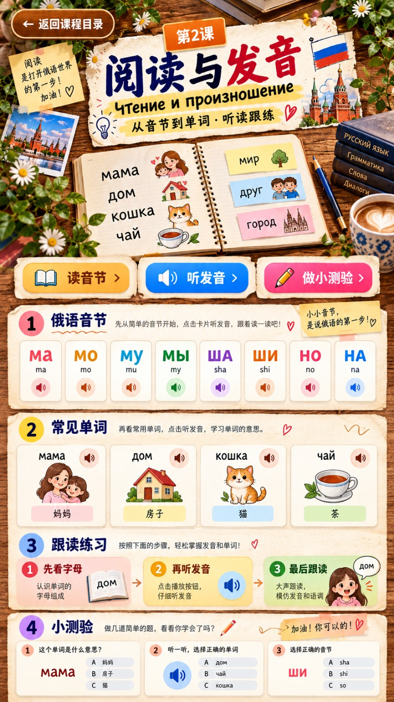

01
+=
МАМАmama妈妈

先分别听两个音节，再听完整单词。请跟着读两遍！
А — a：嘴巴自然张开；У — u：嘴唇向前收圆；О — o：嘴唇稍微收圆；И — i：嘴角略向两边；Ы — y：俄语特有的音，舌头稍微向后，不要直接读成“и”。
М = m，Н = n（形状像 H，但读 n），В = v（形状像 B，但读 v），Т = t，Ш = sh。看字形时要记住：俄语字母和英语字母不总是同一个发音。
先把辅音和元音接起来：М + А = МА，М + У = МУ，Н + О = НО。不要把每个字母停顿开读；听完以后模仿音节整体的声音。
在介绍一个人或一个东西时，可以先用 Это…，意思接近“这是……”。俄语入门阶段可以先直接说「Это + 名词」，不需要额外学习复杂语法。
Это мама. — 这是妈妈。
Это вода. — 这是水。
Это дом. — 这是房子。
Это такси. — 这是出租车。
练习方法：点击橙色声音按钮，先听完整句子，再模仿语调跟读两遍。